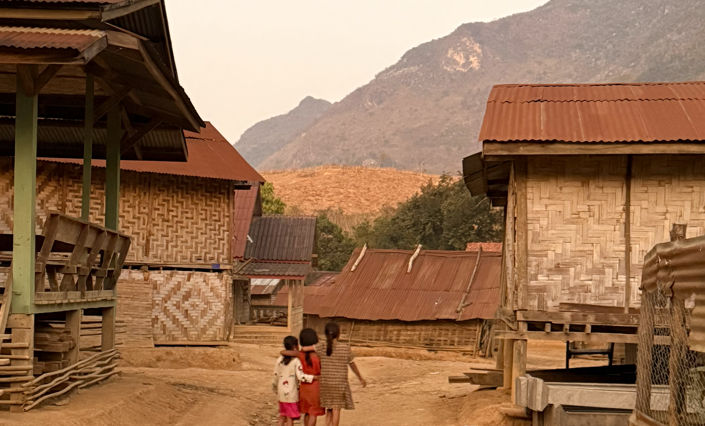
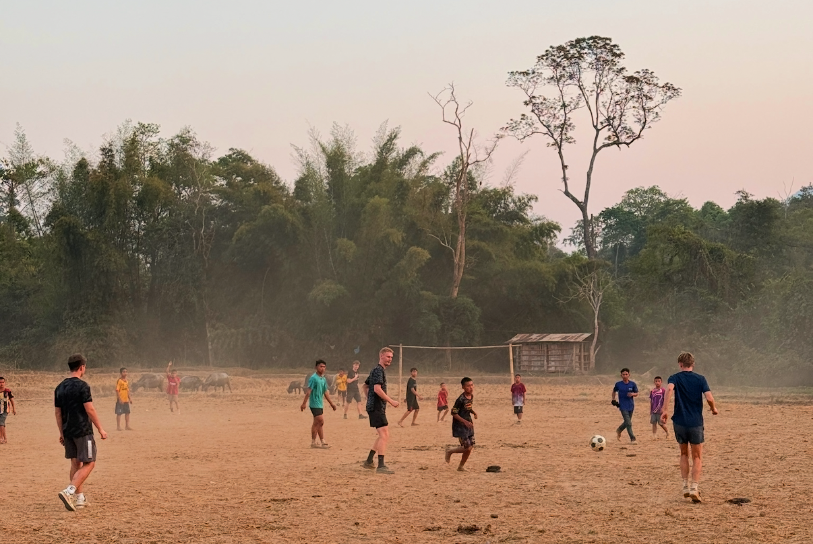
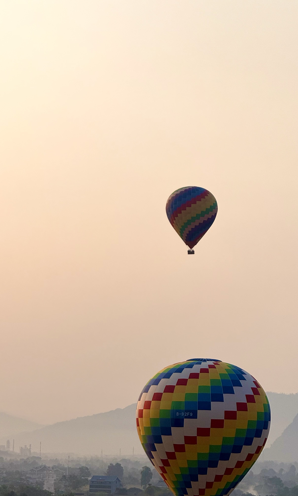
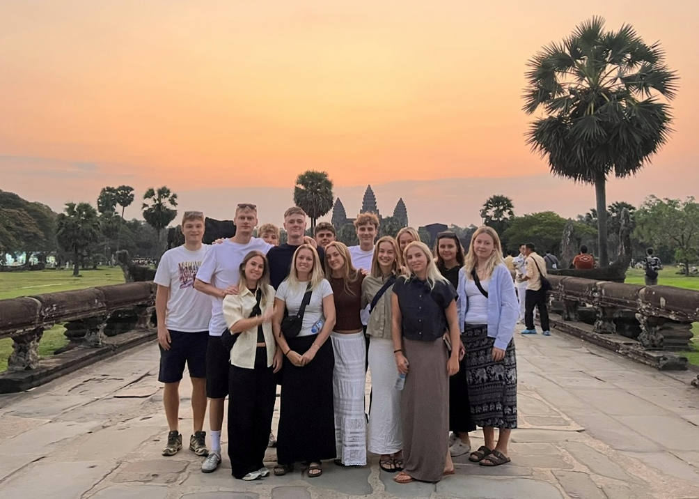
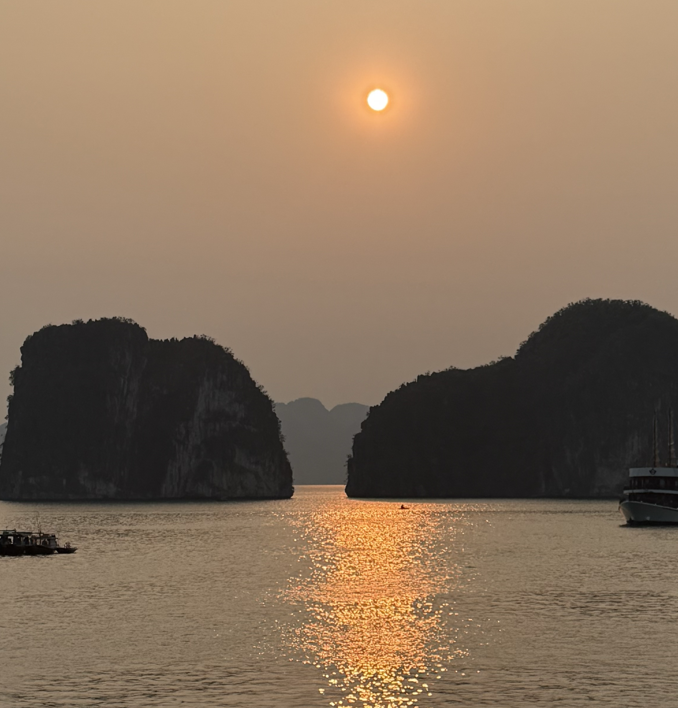
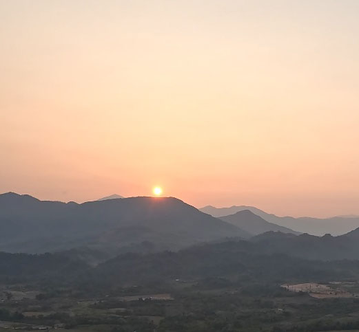

Danmark VS Laos


En uforglemmelig oplevelse
Mit livs rejse i Sydøstasien
Jeg har rejst gennem Sydøstasien i 3 måneder på en grupperejse. Destinationerne var Thailand, Laos, Cambodja, Vietnam og Indonesien. Igennem min rejse, oplevede jeg ting, jeg aldrig havde forestillet mig at opleve. I Thailand var min største oplevelse en 2-dags trekkingtur rundt i området, Umphang. På trekkingturen sov vi hos en familie i et lokalt samfund, hvor vi bla. fik lov til at spille fodbold mod byens lokale børn, som ses på billedet til venstre.
I Laos tog vi på en længere trekkingtur, hvor vi skulle gå 8 timer op i bjergene, og op til endnu et lokalt samfund, som kan ses øverst på siden. Her sov vi i små hytter, hvor vi kunne lege med byens børn, og lave mad med byens voksne. Da vores trekkingtur var slut, tog vi ud for at flyve i luftballon henover byen, Vang Vieng. Vi fløj tidligt om morgenen, så vi kunne opleve solopgang henover Laos landskab, hvilket var utroligt smukt og nok den største visuelle oplevelse jeg har haft nogensinde.
I Cambodja stod vi en morgen tidligt op, for at besøge Angkor Wat og se dets unikke tempel i solopgang. Og til sidst, tog vi i Vietnam en 3-dags bådtur rundt i Ha Long Bay. Her overnattede vi på en båd, hvor vi bla. oplevede de smukkeste solnedgange henover vandet og klipperne.
Mit billedegalleri



